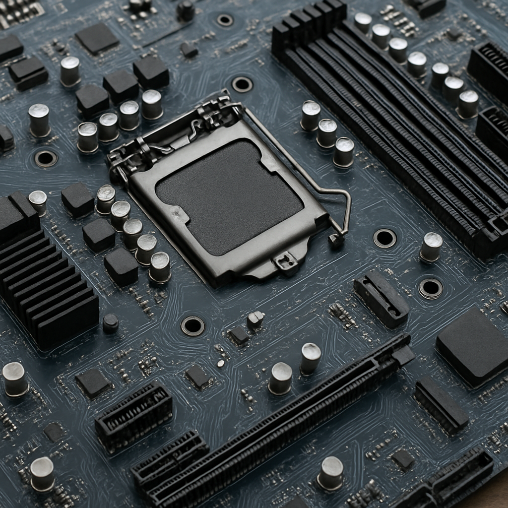
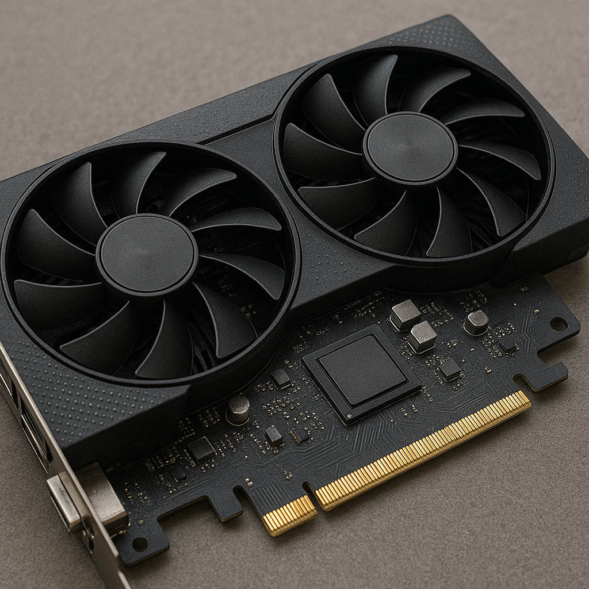
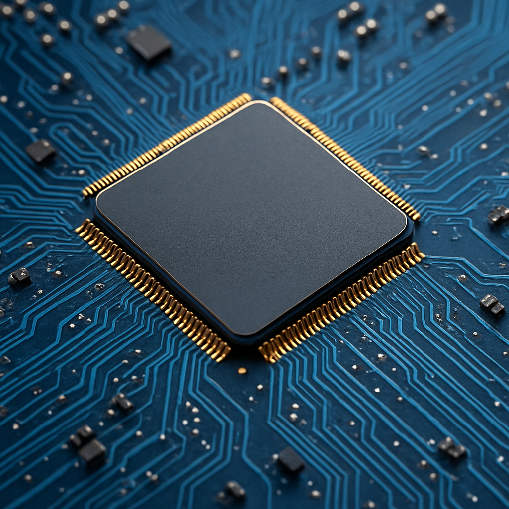
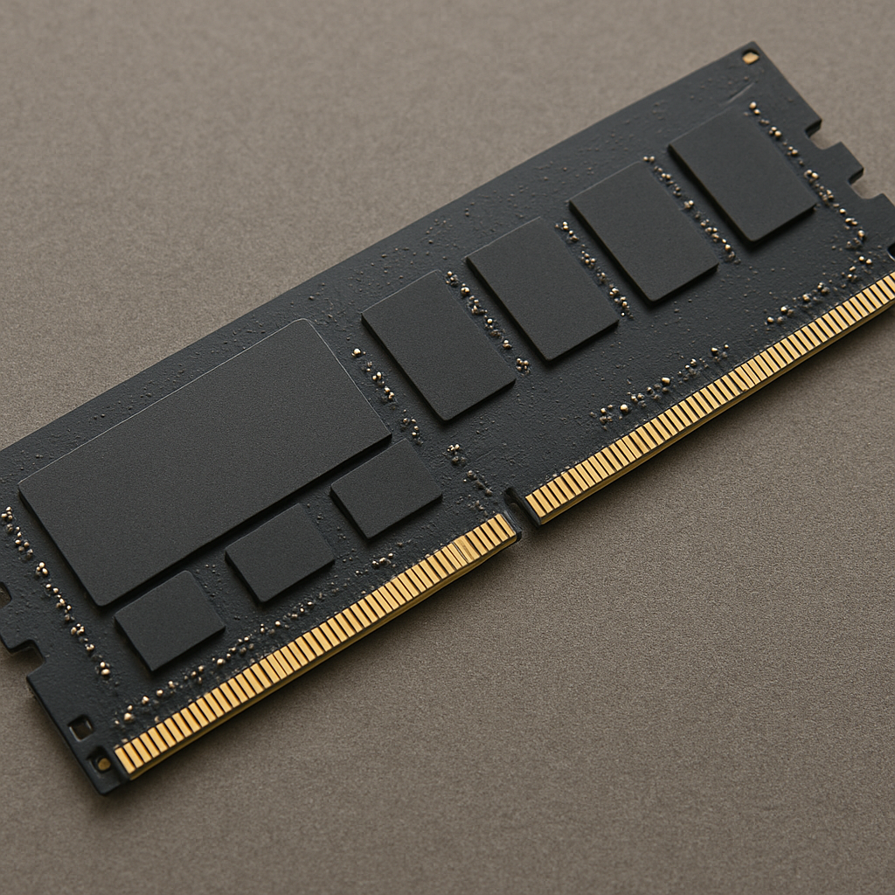
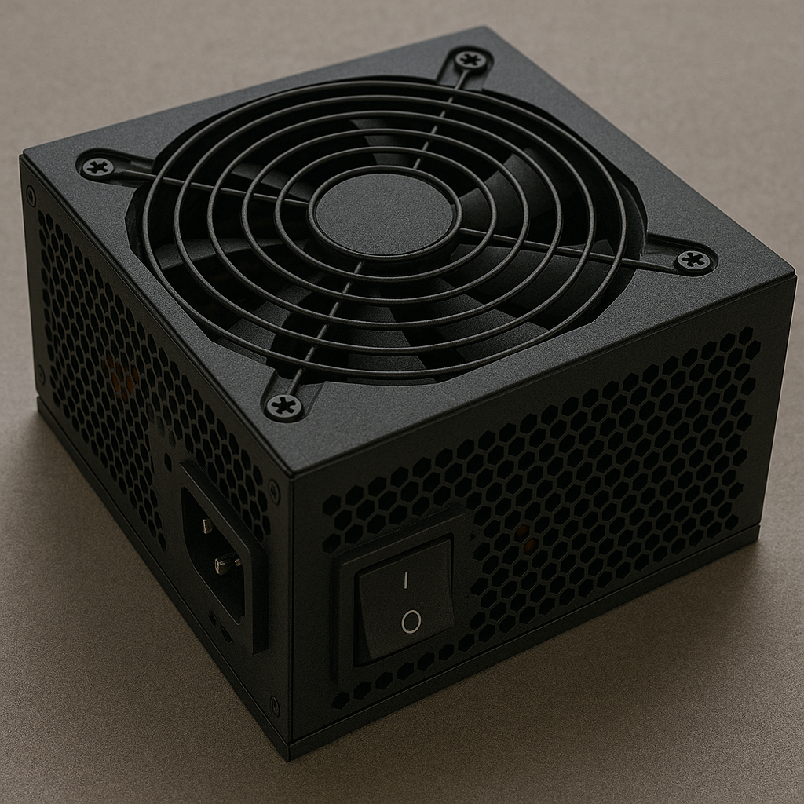
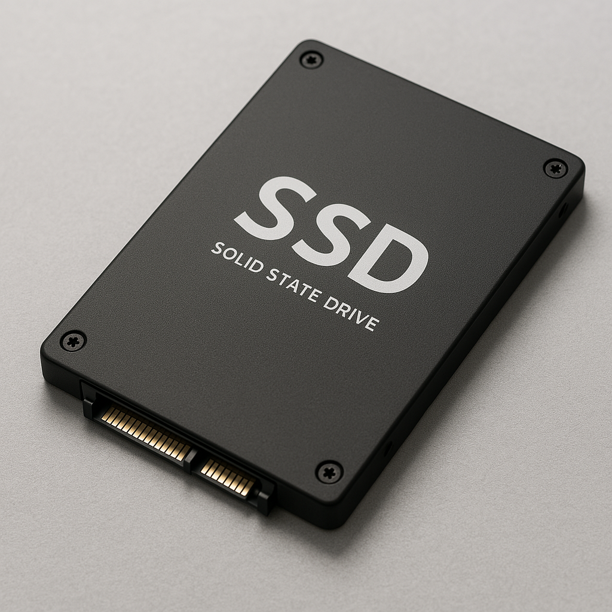

Placa-Mãe
É a base onde todos os componentes são conectados. Possui soquetes para CPU, RAM, placa de vídeo, SSD e mais. Conecta e distribui dados e energia entre os dispositivos. Define o tipo de processador e memória que o sistema suporta. Tem interfaces como USB, HDMI, SATA, entre outras. Modelos variam de acordo com tamanho: ATX, Micro-ATX, Mini-ITX. Inclui também chips de rede, som e conectividade. Uma boa placa-mãe garante estabilidade e expansão futura.

Placa de Vídeo
Responsável por processar imagens, vídeos e gráficos. Essencial para jogos, edição de vídeo e modelagem 3D. Pode ser integrada (na CPU) ou dedicada (placa separada). Modelos dedicados têm memória própria (VRAM). As mais potentes são fabricadas por NVIDIA e AMD. Oferecem suporte a ray tracing, IA e gráficos 4K ou 8K. Desempenho gráfico afeta diretamente a fluidez em jogos. Quanto melhor a placa, melhor a experiência visual.

Processador
O processador é o cérebro do computador. Responsável por executar todas as instruções e cálculos. Ele interpreta comandos dos programas e do sistema operacional. Sua velocidade é medida em GHz (gigahertz). Modelos modernos têm múltiplos núcleos, como quad-core ou octa-core. Isso permite executar várias tarefas ao mesmo tempo. Quanto maior o desempenho, mais rápido o sistema responde. Intel e AMD são os principais fabricantes do mercado.

Memória Ram
A RAM armazena dados temporariamente para acesso rápido. Quanto mais RAM, mais programas podem rodar ao mesmo tempo. DDR5 é a geração mais atual, com velocidades maiores. Melhora muito o desempenho em multitarefa e jogos. Trabalha em conjunto com o processador e sistema operacional. A RAM não guarda dados permanentemente (volátil). Ideal ter pelo menos 16 GB para uso moderno. A frequência da RAM é medida em MHz, afetando a velocidade.

Fonte
A fonte converte energia da tomada em energia para os componentes. Distribui tensões adequadas para placa-mãe, GPU, drives, etc. É essencial para estabilidade e segurança do sistema. Fontes com certificação 80 Plus são mais eficientes. Modelos variam por potência: 500W, 650W, 750W e mais. Uma fonte de má qualidade pode queimar o computador. Fontes modulares permitem organizar melhor os cabos. Sempre escolha uma com potência adequada ao seu setup.

SSD
O SSD é o armazenamento principal do computador. Armazena o sistema operacional, programas e arquivos. Muito mais rápido que HDs tradicionais (sem partes móveis). Modelos NVMe são os mais rápidos, conectados via PCIe. Tamanhos comuns: 256GB, 512GB, 1TB e 2TB. Tempo de inicialização e carregamento de programas é reduzido. SSDs consomem menos energia e são mais resistentes a impactos. Vida útil medida em TBW (Terabytes escritos).